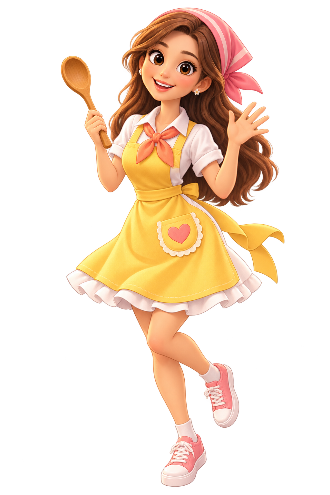

SALLY'S LITTLE KITCHEN · VOL. 01一起煮出
一起煮出
幸福嘅味道。
切一切、拌一拌，將心意放入每一道菜。
同 Sally 由第一份早餐，煮到夢想小店開張。
手指 / 滑鼠都玩得 · 自動儲存進度
MADE WITH
LOVE ♡✦✧
LOVE ♡✦✧

「今日想食啲咩呀？」Sally
YOUR RECIPE COLLECTION
切一切、拌一拌，將心意放入每一道菜。
同 Sally 由第一份早餐，煮到夢想小店開張。
